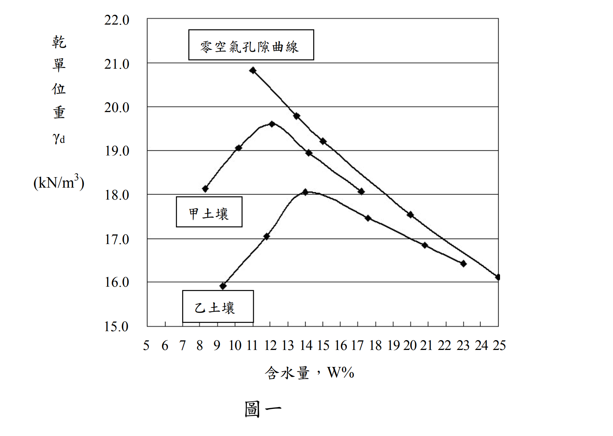

考題編號：SM-2013-2
主分類： SM-U1-3 土壤夯實及壓密
副分類： 無
分析法： 混合
標籤： 夯實曲線 標準夯實試驗 單點夯實法 曲線族法 最大乾單位重 相對夯實度 最佳含水量
1. 原始題目重述 (Problem Restatement)
二、甲乙兩種土壤之標準夯實曲線如圖一所示。一填方工程之回填土係取自某借土區中甲、乙兩種土壤之混合物，吾人取其代表性混合物土樣測得標準夯實試驗之濕單位重為 19.9 $\text{kN/m}^3$，含水量為 11%：
(一)試估計此混合物之最大乾單位重。（8 分）
(二)若此混合土在滾壓後之現地乾單位重為 15.8 $\text{kN/m}^3$，試求其相對夯實度為何？（8 分）
(三)在以此方法決定相對夯實度時，應注意那兩項重點？（9 分）

圖說：圖為甲、乙兩種土壤之標準夯實曲線。甲土壤峰值約在含水量12%、乾單位重19.6 kN/m³；乙土壤峰值約在含水量14%、乾單位重18.0 kN/m³。
2. 考題核心精神與出題者意圖 (Core Concepts & Examiner's Intent)
本題測驗考生對於實務上「曲線族法 (Family of Curves)」與「單點夯實試驗 (One-Point Compaction Test)」之了解與應用。在土方回填工程中，借土區的土壤往往是不同土層的混合物，若對每一車不同混合比例的土壤都重新做完整夯實試驗將耗費大量時間。因此，實務上可透過已知基礎土壤（甲、乙）建立之曲線族，配合代表性土樣進行單一點的標準夯實試驗，藉由該點在曲線族中的相對內插位置，快速估算該混合物之最大乾單位重與最佳含水量，進而計算現地相對夯實度。
出題者同時要求考生指出此快速估算法的限制條件與注意事項，測驗是否具備實務品管概念。
3. 解題戰略地圖與陷阱分析 (Strategic Roadmap & Trap Analysis)
- Step 1：由單點試驗的濕單位重與含水量，計算混合土樣的單點乾單位重。
- Step 2：由圖一讀取相同含水量下，甲、乙兩曲線之乾單位重，並計算混合土之內插比例。
- Step 3：由圖一讀取甲、乙土壤之最大乾單位重，利用相同的內插比例，估算混合土之最大乾單位重。
- Step 4：代入相對夯實度公式求出 RC。
- Step 5：列出單點夯實法（曲線族法）的兩大注意事項：(1) 試驗點必須在乾燥側；(2) 土樣需具代表性與同質性。
陷阱分析：
- 陷阱 1： 誤將單點測得之乾單位重 ($17.93 \text{ kN/m}^3$) 直接視為最大乾單位重。必須明白單點試驗僅是用來「定位」混合土在曲線族中的位置，而非該專屬曲線的峰頂。
- 陷阱 2： 對於第三小題注意事項的回答，若偏離「曲線族法」本身的限制（例如回答成沙漏法測現地密度的注意事項），將無法拿到分數，必須聚焦於此推估最大乾單位重的方法限制。
3.5 變數層次分析 (Variable Hierarchy Analysis)
最終目標
利用單點夯實試驗與曲線族法估算混合土之最大乾單位重，並求出現地相對夯實度。
本題關鍵公式（依計算順序）
- 乾單位重：
$$ \gamma_d = \frac{\gamma_m}{1 + w} $$ - 曲線族內插比例：
$$ r = \frac{\gamma_{d,A} - \boxed{\gamma_d}}{\gamma_{d,A} - \gamma_{d,B}} \quad \text{(於相同 } w \text{ 之下)} $$ - 估算最大乾單位重：
$$ \gamma_{d,max} = \gamma_{d,max,A} - \boxed{r} \cdot (\gamma_{d,max,A} - \gamma_{d,max,B}) $$ - 相對夯實度：
$$ RC = \frac{\gamma_{d,field}}{\boxed{\gamma_{d,max}}} \times 100\% $$
L1：題目直接給定
| 符號 | 數值 | 說明 |
|---|---|---|
| $\gamma_m$ | $19.9 \text{ kN/m}^3$ | 混合土樣之單點夯實濕單位重 |
| $w$ | $11\%$ | 混合土樣之單點夯實含水量 |
| $\gamma_{d,field}$ | $15.8 \text{ kN/m}^3$ | 現地滾壓後之乾單位重 |
L2：需知識點推導
單點乾單位重與內插計算
| 符號 | 公式／來源 | 卡關? |
|---|---|---|
| $\gamma_d$ | $\gamma_m / (1 + w)$ | |
| $\gamma_{d,A}$ | 由圖一讀取 ($w=11\%$) | |
| $\gamma_{d,B}$ | 由圖一讀取 ($w=11\%$) | |
| $r$ | 內插比例公式 | |
| $\gamma_{d,max,A}$ | 由圖一峰值讀取 | |
| $\gamma_{d,max,B}$ | 由圖一峰值讀取 | |
| $\gamma_{d,max}$ | 依 $r$ 比例線性內插 | |
| $RC$ | $(\gamma_{d,field} / \gamma_{d,max}) \times 100\%$ | |
L3：深層知識（不懂就卡住）
| 知識點 | 說明 | 卡關? |
|---|---|---|
| 曲線族法 (Family of Curves) | 利用單點試驗在已知夯實曲線族間的相對位置，按比例推估其專屬曲線之最大乾密度 | |
| 單點試驗含水量限制 | 含水量必須位於「乾燥側」，因濕側各曲線趨近零空氣孔隙曲線，將無法精確定位 |
4. 步驟化詳細計算過程 (Step-by-Step Detailed Calculation)
(一) 試估計此混合物之最大乾單位重
Step 1：計算單點試驗之乾單位重
已知試驗之濕單位重 $\gamma_m = 19.9 \text{ kN/m}^3$，含水量 $w = 11\%$：
$$ \gamma_d = \frac{\gamma_m}{1 + w} = \frac{19.9}{1 + 0.11} = 17.928 \approx 17.93 \text{ kN/m}^3 $$
Step 2：計算混合土在曲線族中之相對位置（內插比例）
由圖一讀取，當 $w = 11\%$ 時，甲、乙兩土壤的乾單位重約為：
- 甲土壤：$\gamma_{d,A} \approx 19.4 \text{ kN/m}^3$
- 乙土壤：$\gamma_{d,B} \approx 16.6 \text{ kN/m}^3$
定義混合土在甲、乙曲線間之相對位置比例 $r$（以甲曲線為基準向下推算）：
$$ r = \frac{\gamma_{d,A} - \gamma_{d,mix}}{\gamma_{d,A} - \gamma_{d,B}} = \frac{19.4 - 17.93}{19.4 - 16.6} = \frac{1.47}{2.80} = 0.525 $$
此表示該混合土的夯實曲線約位於甲、乙兩曲線之間 52.5% 的位置（非常接近中位數 50%）。
Step 3：估算混合土之最大乾單位重
由圖一讀出甲、乙土壤之峰值（最大乾單位重）：
- 甲土壤：$\gamma_{d,max,A} \approx 19.6 \text{ kN/m}^3$ （對應 $w_{opt} \approx 12\%$）
- 乙土壤：$\gamma_{d,max,B} \approx 18.0 \text{ kN/m}^3$ （對應 $w_{opt} \approx 14\%$）
利用前述算得之內插比例 $r = 0.525$，線性內插估算混合物之最大乾單位重：
$$ \gamma_{d,max} = \gamma_{d,max,A} - r \cdot (\gamma_{d,max,A} - \gamma_{d,max,B}) $$
$$ \gamma_{d,max} = 19.6 - 0.525 \times (19.6 - 18.0) = 19.6 - 0.525 \times 1.6 = 19.6 - 0.84 = 18.76 \text{ kN/m}^3 $$
[!TIP]
策略註解：若於考場上以肉眼判斷 17.93 kN/m³ 幾乎位於 19.4 與 16.6 的正中央，直接取兩者峰值的平均值 $\frac{19.6 + 18.0}{2} = 18.8 \text{ kN/m}^3$ 作答亦屬合理之工程估算。本解析以精確內插值 18.76 kN/m³ 作為代表。
$$ \boxed{\gamma_{d,max} \approx 18.76 \text{ kN/m}^3} $$
(二) 試求其相對夯實度
Step 4：計算相對夯實度 (RC)
已知現地滾壓後之乾單位重 $\gamma_{d,field} = 15.8 \text{ kN/m}^3$。
相對夯實度公式：
$$ RC = \frac{\gamma_{d,field}}{\gamma_{d,max}} \times 100\% $$
代入數值：
$$ RC = \frac{15.8}{18.76} \times 100\% = 84.22\% $$
(註：若以前述之 18.8 kN/m³ 計算，則 RC = 15.8 / 18.8 = 84.04%)
$$ \boxed{RC = 84.2\%} $$
(三) 在以此方法決定相對夯實度時，應注意那兩項重點？
以此「單點夯實試驗配合曲線族法」估計最大乾單位重，進而決定相對夯實度時，應特別注意以下兩項核心重點：
- 單點試驗之含水量必須位於「乾燥側」(Dry Side of Optimum)：
執行單點夯實的試驗含水量，必須低於或接近最佳含水量。若含水量落於「過濕側」(Wet Side)，因各類型土壤在濕側的夯實曲線都會趨近並平行於「零空氣孔隙曲線 (ZAVC)」，使得各曲線彼此重疊。在此區間將無法準確分辨土樣所對應的內插位置，導致嚴重誤判最大乾單位重。 - 單點土樣之代表性與材料相似性 (Representativeness & Similarity)：
進行單點試驗的土樣，必須真實代表現地正在滾壓的混合土層；且其土壤來源、礦物成分及級配特徵，必須與建立該「曲線族（甲、乙土壤）」的材料為同質或相似。若現場混入了不屬於甲、乙兩類土壤的其他異常材料，則曲線族的內插幾何關係將不再成立，估計結果將失去準確度。
(補充：實務上尚須確保單點夯實試驗所使用之夯實能量必須與建立曲線族時的能量完全一致，例如兩者皆必須為標準夯實試驗。)
5. 關鍵爭議點與進階探討 (Critical Issues & Advanced Discussion)
- 讀圖精度的容許範圍： 在國家考試中，由圖表讀取數據本身帶有視覺誤差。例如 $\gamma_{d,A}(11\%)$ 有些考生可能讀成 19.3，$\gamma_{d,B}(11\%)$ 讀成 16.5。只要後續的內插邏輯（約 50%~55% 的位置）與線性內插的觀念正確，最終推算的最大乾單位重落在 18.7~18.9 $\text{kN/m}^3$ 區間內，且 RC 落在 83.5%~84.5% 之間，皆能獲得滿分。
- 曲線族法之實務價值： 在大型土方回填工程中，料源混合比例變化快速，無法為每一車土方進行完整的 5 點標準夯實試驗（需耗費大量工時）。曲線族法（如 ASTM D5080 規範）允許工程師在現場快速進行 1 點測量，利用既有資料庫即時推估 $\gamma_{d,max}$，是兼顧現場品管速度與工程精度的重要工具。